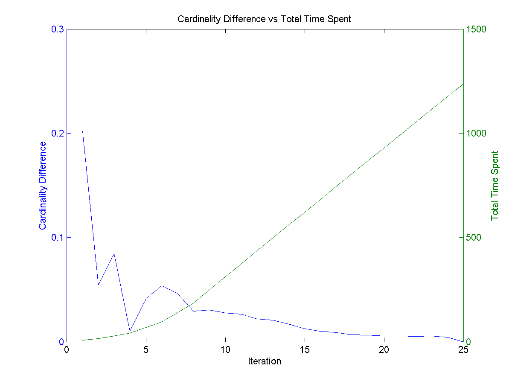

CMP 717 - Practical 2: Patch-based image denoising using learned dictionaries
Computation Time Trade-Off
Since I have a relatively older CPU(AMD FX6100), the code didn't run well for extensive testing. I had to set a reasonable iteration count in order to do the computations faster, but not lose much performance. I started by profiling iteration count vs cardinality on barbara.png with default values(100 atoms, patch size of 8).
I have set iteration count to 25 and modified Train_Dictionary function to report time spent. Then I have collected those data and parsed it with cardinality_cost.m. Using those data, I have decided to use 8 iterations for my tests. The output graphs from my parser can be seen below:
|  |
{kind=link}
{kind=link}
{kind=link}
{kind=link}
Problem 1.1
In this part, I have coded a small script(main_p11.m) to run some combinations of different parameters. The parameters that I have changed are patch size, noise sigma, number of atoms. I have saved image results and PSNR values in .mat files, so I can analyze them later.
Using another script(results/process_results.m) I have plotted PSNR improvement of K-SVD method versus various sigma values.
I have set iteration count to 25 and modified Train_Dictionary function to report time spent. Then I have collected those data and parsed it with cardinality_cost.m. Using those data, I have decided to use 8 iterations for my tests. The output graphs from my parser can be seen below:
| 64 atoms, 4x4 patches vs 8x8 patches | 81 atoms, 4x4 patches vs 8x8 patches |
| 121 atoms, 4x4 patches vs 8x8 patches | 144 atoms, 4x4 patches vs 8x8 patches |
{kind=link}
{kind=link}
{kind=link}
{kind=link}
{kind=link}
{kind=link}
{kind=link}
{kind=link}
From these results I can say that to get a good result from K-SVD, we need to have:
- high number of atoms
- a large patch size
But choosing a high number of atoms alone doesn't cut it, either. As results show, a large number of atoms with a small patch gives less performance than other methods.
Problem 1.2
For this part, I have introduced 2 new parameters for param variable; param.externalTrain and param.externalTrainPath. The parameters allow us to control training behaviour. If externalTraining is set, then images in externalTrainingPath are read and their patches are used instead of original images.
I have created an extra function generate_external_patches to generate image patches from the external directory. As computation is a big problem, for my tests I just used 4 images found on the internet. Then from my runner script (main_p12.m) I set parameters accordingly and acquired results.
For example, below is a dramatic result. I have used just 1 image (fan_eroded.png) of size 512x512 for external training data. Then I used original image itself. Since training image has no useful patch information about the noisy image, the results are not as good as original one:
| External Training with fan_eroded.png only | Original Training Method |

|
{kind=link}
{kind=link}
{kind=link}
In the table below, full training data is used. The results are not as bad as our last case, but external tranining data is inferior to original image training data.
| External Training with full data 6 images(sigma 20, 40) | Original Training Method(sigma 20, 40) |
|
|
{kind=link}
{kind=link}
{kind=link}
Conclusion
As with other learning based algorithms, K-SVD depends heavily on training data nad results verify that, too. The bad performance of external training data is mainly caused by limited dataset and low iteration counts. If training data was large enough and we could optimize it for a long time, better results could be acquired from external dataset, too.